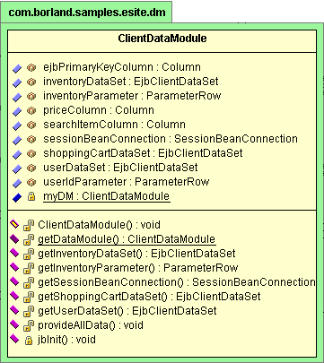

This is a feature of JBuilder Enterprise
JBuilder provides UML diagrams for visualizing code and browsing classes and packages. UML diagrams can help you quickly grasp the structure of unknown code, recognize areas of complexity, and increase your productivity by resolving problems more rapidly.
Two UML diagrams are available in JBuilder:
To view a UML diagram, compile the project and double-click a source file or package in the project pane. Then choose the UML tab at the bottom of the JBuilder browser.

For more information, see:
Building Applications with JBuilder: Visualizing code with UML